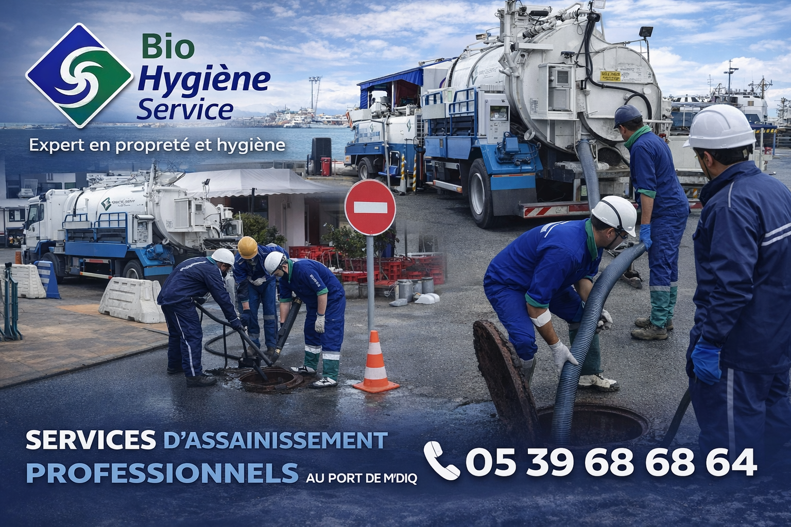

Traitement 4D écologique
Une approche globale intégrant la dératisation, la désinsectisation, la désinfection et la déreptilisation.
Bio Hygiène Services accompagne les entreprises, copropriétés, sites industriels et espaces collectifs avec des solutions sur mesure pour garantir des espaces propres, sains, sûrs et maîtrisés.

Bio Hygiène Services place la qualité, la rigueur et la satisfaction client au cœur de chaque intervention.
Dératisation, désinsectisation, désinfection et déreptilisation dans une approche globale et structurée.
Une organisation fondée sur la qualité de service, la rigueur d’exécution et l’amélioration continue.
Chaque site bénéficie d’une solution pensée selon ses contraintes, son activité et son niveau de besoin.
Une équipe à l’écoute pour orienter rapidement chaque demande vers la solution la plus adaptée.
BHS propose une gamme complète de prestations en hygiène professionnelle, prévention sanitaire, lutte écologique contre les nuisibles, nettoyage et assainissement.
Une approche globale intégrant la dératisation, la désinsectisation, la désinfection et la déreptilisation.
Des prestations adaptées aux bureaux, commerces, parties communes, sites techniques et environnements industriels.
Des interventions ciblées pour préserver la salubrité des installations, limiter les nuisances et améliorer durablement l’hygiène.
Nous mettons la qualité, la rigueur, la réactivité et l’adaptation au cœur de chaque intervention.
Des solutions pensées pour concilier efficacité, sécurité et respect de l’environnement.
Chaque site est étudié selon ses contraintes, son activité et le niveau de risque identifié.
La référence ISO 9001 reflète notre engagement en matière d’organisation, de qualité de service et d’amélioration continue.
BHS privilégie une relation fondée sur l’écoute, la clarté, la fiabilité et le professionnalisme.
Chez Bio Hygiène Services, chaque mission repose sur une démarche claire, structurée et adaptée à la réalité du terrain.
Nous analysons la situation, les contraintes du site et le niveau de besoin afin de proposer une réponse pertinente.
Nous définissons l’intervention la plus cohérente selon l’environnement, les objectifs et les exigences du client.
Nos prestations sont réalisées avec rigueur, professionnalisme et attention portée à la qualité d’exécution.
Nous inscrivons nos actions dans une logique de contrôle, de prévention et d’amélioration durable.
BHS accompagne différents types de structures avec une approche professionnelle, responsable et adaptée à chaque environnement.
Des espaces propres, sains et accueillants pour les équipes et les visiteurs.
Des interventions adaptées aux parties communes et aux exigences de salubrité.
Des solutions pour préserver l’image des lieux et la qualité d’accueil.
Une prise en charge structurée selon les contraintes d’exploitation et de sécurité.
Notre équipe est à votre écoute pour étudier votre besoin et vous proposer une solution adaptée à votre environnement.
Téléphone : 05 39 68 68 64
E-mail : bio.hygiene.services@gmail.com
Adresse : 69 av Kenya lot Oumekeltoum centre Martil
Nous contacterBio Hygiène Services vous accompagne avec des prestations adaptées en traitement 4D écologique, nettoyage professionnel, désinfection, assainissement et curage.